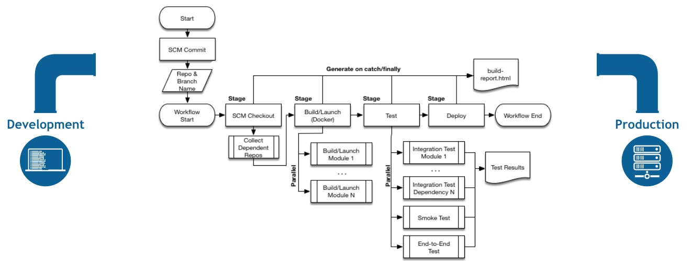
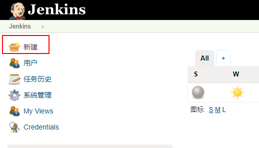
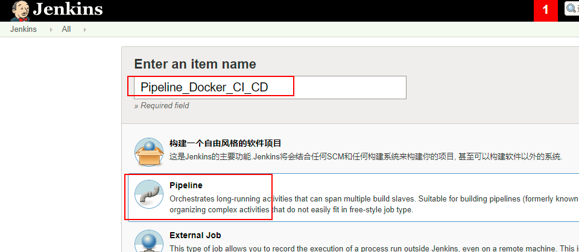
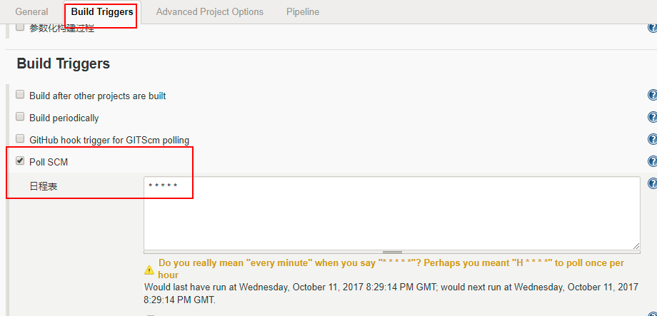
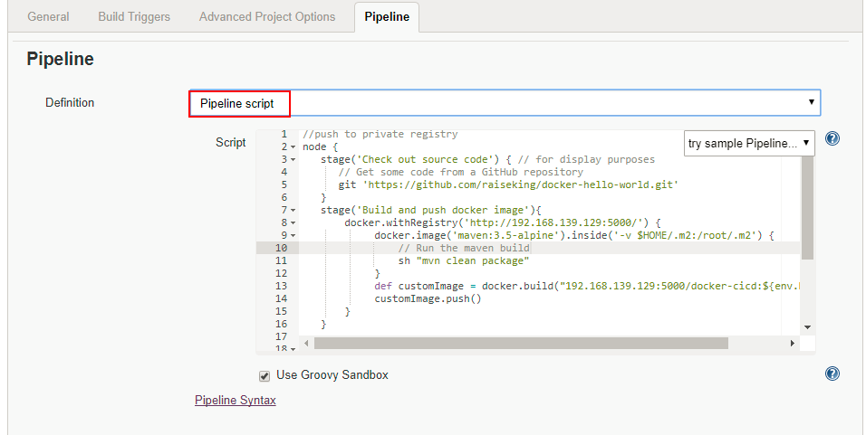
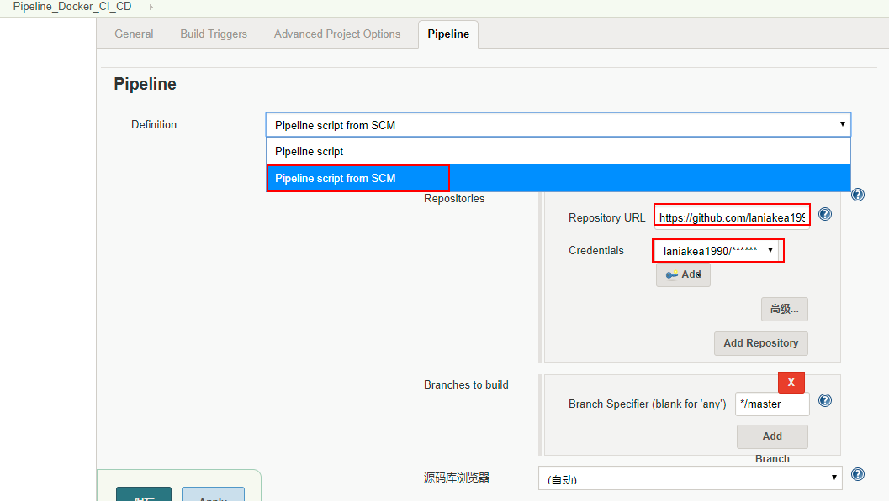

什么是Pipeline
16年4月20日，历经Alpha(2/29)，Beta(3/24)，RC(4/7)3个版本的迭代，Jenkins 2.0 正式发布。这也是Jenkins面世11年以来的首次大版本升级。
Pipeline as Code是Jenkins 2.0的精髓所在，是Jenkins实现CI(Continuous Integration)到CD(Continuous Delivery)转变的关键推手。所谓Pipeline，就是一套运行于Jenkins上的工作流框架，将原本独立运行于单个或者多个节点的任务连接起来，实现单个任务难以完成的复杂发布流程。Pipeline的实现方式是一套Groovy DSL，任何发布流程都可以表述为一段Groovy脚本，并且Jenkins支持从代码库直接读取脚本（Jenkinsfile），从而实现了Pipeline as Code的理念。
Pipeline的几个基本概念：
Stage: 阶段，一个Pipeline可以划分为若干个Stage，每个Stage代表一组操作。注意，Stage是一个逻辑分组的概念，可以跨多个Node。
Node: 节点，一个Node就是一个Jenkins节点，或者是Master，或者是Agent，是执行Step的具体运行期环境。
Step: 步骤，Step是最基本的操作单元，小到创建一个目录，大到构建一个Docker镜像，由各类Jenkins Plugin提供

创建Pipeline
Pipeline脚本是用Groovy写的，可以通过以下任一方式创建基本Pipeline：
pipeline script：直接在Web UI的script输入框里面输入pipeline script语句即可，参考说明可以点击输入框下边的Pipeline Syntax，里面有很多示例操作说明，非常好用。
pipeline script from SCM：需要配置SCM代码存储Git地址或SVN地址，指定script文件Jenkinsfile所在路径，每次构建job会自动去指定的目录执行script文件
基于前面安装的Jenkins master，进入jenkins主页：http://192.168.139.132:8088/，点击左边菜单的新建选项：

选择"Pipeline"类型并输入项目名：

进入项目的配置页面，首先配置项目的自动触发：

在Web UI中定义Pipeline
在Pipeline配置页面的文本区域内，输入Pipeline script：

在SCM中定义pipeline
复杂的Pipeline难以在Pipeline配置页面的文本区域内进行写入和维护。为了解决这一问题，jenkins Pipeline支持在文本编辑器中编写脚本文件jenkinsFile，Jenkins可以通过从SCM选项的控件中加载Pipeline脚本。
选择SCM选项中的Pipeline脚本后，不要在Jenkins UI中输入任何Groovy代码; 只需指定要检索的Pipeline脚本的路径。更新指定的存储库时，只要Pipeline配置了SCM轮询触发器，就会触发一个新构建。

Pipeline语法
Pipeline最基本的部分是“step”。基本上，step告诉Jenkins 要做什么，并且作为Declarative Pipeline和Scripted Pipeline语法的基本构建块。
Pipeline支持两种语法：Declarative Pipeline（在Pipeline 2.5中引入，结构化方式）和Scripted Pipeline，两者都支持建立连续输送的Pipeline。
Declarative Pipeline
Declarative Pipeline是Jenkins Pipeline 的一个相对较新的补充， 它在Pipeline子系统之上提出了一种更为简化和有意义的语法。
所有有效的Declarative Pipeline必须包含在一个pipeline块内，例如：
pipeline {
/* insert Declarative Pipeline here */
}
Declarative Pipeline中的基本语句和表达式遵循与Groovy语法相同的规则 ，但有以下例外：
- Pipeline的顶层必须是块，具体来说是：pipeline { }
- 没有分号作为语句分隔符。每个声明必须在自己的一行
- 块只能包含Sections, Directives, Steps或赋值语句。
- 属性引用语句被视为无参方法调用。所以例如，输入被视为input（）
例子：
Jenkinsfile (Declarative Pipeline)
pipeline {
agent any
stages {
stage('Build') {
steps {
sh 'make'
}
}
stage('Test'){
steps {
sh 'make check'
junit 'reports/**/*.xml'
}
}
stage('Deploy') {
steps {
sh 'make publish'
}
}
}
}
Scripted Pipeline
Scripted pipeline是基于groovy的一种DSL语言，与Declarative pipeline相比为jenkins用户提供了更巨大的灵活性和可扩展性。
例子：
Jenkinsfile (Scripted Pipeline)
node {
stage('Build') {
sh 'make'
}
stage('Test') {
sh 'make check'
junit 'reports/**/*.xml'
}
stage('Deploy') {
sh 'make publish'
}
}
Declarative pipeline和Scripted pipeline的比较
共同点：
两者都是pipeline代码的持久实现，都能够使用pipeline内置的插件或者插件提供的steps，两者都可以利用共享库扩展。
区别：
两者不同之处在于语法和灵活性。Declarative pipeline对用户来说，语法更严格，有固定的组织结构，更容易生成代码段，使其成为用户更理想的选择。但是Scripted pipeline更加灵活，因为Groovy本身只能对结构和语法进行限制，对于更复杂的pipeline来说，用户可以根据自己的业务进行灵活的实现和扩展。
Jenkinsfile样例
//push to private registry
node {
stage('Check out source code') { // for display purposes
// Get some code from a GitHub repository
git 'https://github.com/raiseking/docker-hello-world.git'
}
stage('Build and push docker image'){
docker.withRegistry('http://192.168.139.129:5000/') {
docker.image('maven:3.5-alpine').inside('-v $HOME/.m2:/root/.m2') {
// Run the maven build
sh "mvn clean package"
}
def customImage = docker.build("192.168.139.129:5000/docker-cicd:${env.BUILD_ID}")
customImage.push()
}
}
stage('Deploy with docker image') {
echo "Deploy artifact image to docker env."
docker.withRegistry('http://192.168.139.129:5000/') {
sh "docker pull 192.168.139.129:5000/docker-cicd:${env.BUILD_ID}"
sh "docker run -d -p 8888:8080 192.168.139.129:5000/docker-cicd:${env.BUILD_ID}"
}
}
}